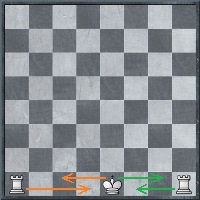

The Rules Of The Game
Two players play against each other, each controlling a set of 16 piece army (8 pawns, 2 knights, 2 bishops, 2 rooks, 1 queen, and 1 king) on a 64 checkered-square board. The player with the light-colored pieces is called White(s), and his opponent, controlling dark-colored pieces, is called blacke(s).
The chessboard is made of 64 checkered squares: 32 dark, and 32 light. The 8 rows are called "ranks", and are numbered 1 to 8 from white's side to black's. The 8 columns are called "files", and are labeled with the first 8 letters of the Latin alphabet from left to right(a-h). The 1st and 8th ranks are called the "back ranks", respectively for the whites and blacks. Before putting the pieces on the board the correct positioning of the board needs to be checked, because although it won't matter if you rotate the board 180 degrees, but rotating it to 90 degree will reverse the order of light and dark squares, and result in wrong configuration of the pieces. A rule of thumb to remember is that whites always have a light square on their right hand corner These coordinates help us keep track of the pieces on the board, and keep records of millions of games that have been played in the history of the game. The diagram on the right is the only one chessisawesome.com with the coordinates labeled on it. Take a good look at it. In fact, study it! That is the first step that anyone who wants to play serious chess should do: study the coordinates, and remember each square by its coordinate, by its name.
Pawns
Pawns are the weakest single pieces out of all, but combined together they can create unbreackable chains, and barricade the advance of oponent's pieces, providing a greate shield for the defending side. Pawns can also act together successfully in attack, gradually pressing down on the opponent's weakened wings or the center. So knowing how to use pawns is a very important skill; they seem worthless to the beginner, but for the expert pawns can be as important as the queen and rooks. As mentioned one of the early chess geniuses François Philidor, "Pawns are the very soul of the game".
As mentioned earlier, each player starts with 8 pawns. At the beginning of the game white's pawns are aligned across the board on the 2nd rank. Likewise, black's pawns start the game aligned on the 7th rank. Pawns are the only pieces on the board that can not move backwards. Their direction is towards the back rank of the opposition.
In general, pawns move one step (square) forward at a time, however during their first step they have the option to choose between one-square-forward and two-squares-forward moves. In the diagram shown on the right side the white's E-pawn (the pawn on E file) has moved two square up, to which black responded with moving his E-pawn forward by one square. The two-squares-forward moves give the players an opportunity to deploy and develop their pieces faster (which can lead to more flexibility in the middlegame) but it also creates weaknesses in defense. Many players choose to open up the game with two-square-forward pawn moves playing with whites. Usually the central two pawns, and the C-pawns are moved. You will learn the reasons why the advancement of central pawns is preferred to that of the wing pawns at the beginning of the game later on. Blacks too can reply with two-square-forward moves, and prevent white from making an adjacent two-square-forward pawn move.
Asides from being the only pieces that can't move backwards, pawns are also the only pieces that don't capture in the same way they move. All the other pieces capture whatever piece the opponent has on their landing square of the next move. Pawns can capture a piece only if it is on their diagonally-ahead square on either side. This also means that once a pawn captures a piece it moves to a new file, and it is the only time when a pawn moves not directly but with a little sideway tilt. When your pawn captures a piece and switches to a new file you can end up having two pawns on the same file (known as doubling of the pawns), which is not a good structural setup for your pieces since you loose the ability to connect your pawns in a chain. So, many good players may sacrifice a better piece to weaken your pawn structure. Many novices often find themselves having three pawns on the same file, which is a disaster for a positional play in most cases. When two pawns of opposite color are "facing" each other, but neither one is venturing to capture the other, what is called "a tension" is created. If you review the games of many experienced players you will see that a lot of their thinking and maneuvering is closely, if not directly, related to those two or three pawns that are bound in this tension, and the game evolves around them. So, knowing when to capture with a pawn, and when to let the tencion be is a skill that is very crucial for advanced level chess play. Needless to say, that it is the outcome of this pawn battle that decides the fate of the whole game.
En Passant
Now consider a case where the white pawn is on the 5th rank, and blacks move one of their pawns, on a file adjacent to the white pawn, two squares forward (see the diagram on the right). In this case white will have the right to capture that black as if it was standing on the square behind of it's current location. However white has only one chance to do so: if the pawn is not captured on the very next move, then it is safe, and cannot be captured by the same white pawn afterwards. This is known as the en passant move, or en passant capture (in French en passant means "in passing")
When a pawn reaches the oposition's back rank it gets promoted. The player decides to what pieces does the pawn promote to. You can either choose to recover a "fallen" piece, or to have more of what you already have on the baord. So, you can end up having two queens, or three bishops on the board. Of course in most scenarios it is most beneficial to promote to a ween or a rook, since those are the two most powerful pieces on the board, but often a promotion to knight can be the best choice, because knights have the ability to attack those squares which even queen can't from the same square.
Knights
Knights are the most unpredictable pieces out of all because of their irregular moving pattern. Each player starts with two knights, with starting positions of B and G squares of the back ranks. Their movements is hard to describe in words, and although there are many inaccurate descriptions, such as "two square up, one square over", or "drawing an L while moving", I believe the best way to describe their motion is to show it on a board. Some players, including myself, prefer to visualize knights' movements as a direct jump from one square to the other, instead of a two step move. As you can see from the shown diagram knights are more actively affecting the board when positioned in the middle of it. In this case they can attack/control up to eight squares, while a knight positioned on the side of the board, or even worse - at the corner, can control many fewer squares. Knights capture in the same way they move: simply moving the knight onto a new square where an opponent's piece is standing will capture the piece (The same concept is true for the rest of the pieces, so I won't be repeating this sentence each time for the other pieces).
Knights are also the only pieces that can jump over other pieces, both friendly and hostile. This is of course another great ability of these pieces which comes handy not only at the opening part of the game (Due to this ability nights can develop before the pawns ahead of them move forward; a privilege that none of the other pieces have at the opening stage), but also in the middlegame and endgame. This virtue makes knights very aggressive and flexible pieces at the hands of those who know how to maneuver them.
The value of a knight is approximately that of three pawns. People use such valuing systems to evaluate the material advantage of one play over the other throughout the game. It is important to know, that these evaluations don't necessarily mean that if one player has more material then it is more likely that she will be victorious. It is merely a way of measuring the resources of the sides. A completely different question is how are those resources utilized.
Bishops
At the beginning of the game each player also gets two bishops, which start the game from the C and F squares of the back rank. Notice, that the C and F squares of the back rank are of different color for both sides. Bishops move diagonally, as far as they desire if the path is clear. This diagonal path requires them to stay on the same color squares all the time, hence the "white-squared bishop" and "dark-squared bishop" expressions. Like the knights, bishops too are more influential when positioned in the middle of the board. Unlike the knights, however, having a bishop at a corner of a board is not as bad as in the case of knights, because bishops can improve their positioning in a single move, whereas for knights it takes at least two moves to improve their position.
Value-wise a single bishop is considerred more or less equal to a single knight. Nevertheless, there are some scenarios in which bishops are more preferable, and some in which knights are more useful. In particular you should remember a couple of general rules regarding this matter. Bishops are more valuable when the opponent's pawn structure is destroyed, or not well structured. In this case the bishops' paths will be clear and they can cross the board from one end to the other feely. In this scenario a bishop pair is a very formidable force, and is definitely preferred over a knight pair. But, if your opponent is a strong positional player, and knows how to position his pawns at least one of your bishops will be stalled, at least until the deep middlegame, or sometimes even till the endgame. This brings us to in my opinion the funniest expression in chess: "bad bishop". If you have a bad bishop it would be a good idea to find a way to exchange it with the opponent's knight or bishop (or even better if you get a better deal), because while the blocking structure of the pawns is affecting your bishop's ability to function, your opponent's maneuvering knights probably won't be challenged by those same structures. Of course it's obvious, that a knight pair is preferred in such scenarios.
Rooks
Rooks are the second most powerful pieces after the queen, but they are usually the last pieces when it comes to their development. This is mainly caused by their immobility at the beginning of the game, since their paths are blocked with other undeveloped pieces. Rooks move as far as desired, if the path is clear, along the files and ranks.
At the first half of the game rooks usually play a very important defensive role, because the rest of the pieces usually are engaged in the pre-middlegame, and middlegame action, battling for control over territory and material, and the very vulnerable back rank of the sides is left to the rooks. The expression "connected rooks" means that you have developed all your pieces and have only the two rooks left on the back rank, facing each other (although the back rank is not the only place where you can have connected rooks), and marks the end of the opening stage, and the beginning of the middlegame.
Rooks are considered to have a value equivalent to that of five pawns, or a bishop and a half (a pair of bishops and a knight balances two rooks in material). The side with a rook advantage in an endgame is usually expected to get the win out of the game. This is not true in the case of a knight, or bishop, advantage, because if all the other material is balanced and cancel each other out, a bishop, or knight, on its own is not enough to mate the opponent, and a draw is claimed. This is why rooks are very cherished by chess players.
The Queen
 The Queen is the most powerful piece on the board. The movement of the queen is the combination of those of bishop and rook.
This makes the queen the most flexible piece on the board, both defensively and in attack. The only weakness of the queen is
its vulnerability to knights, meaning that a knight that is attacking the queen is not in the queen's scope.
The Queen is the most powerful piece on the board. The movement of the queen is the combination of those of bishop and rook.
This makes the queen the most flexible piece on the board, both defensively and in attack. The only weakness of the queen is
its vulnerability to knights, meaning that a knight that is attacking the queen is not in the queen's scope.
A queen is equivalent to the value of nine pawns. This, of course, is a huge material advantage, that's why losing a queen (not trading queens) is considered a fatal blow for any player. Very often opponents trade the queens and continue the rest of the game in a less tense condition. This is especially a characteristic of positional players, whereas tactically strong players don't mind having queens on the board at all; they might even agree to exchange it with a rook and knight, or a rook and bishop, although only the exchange of queen for two rooks is considered an equivalent trade to the queen for queen trade.
The King
The King is priceless. You cannot afford to lose the king, unlike all the other pieces, because losing the king means losing the game. The King moves one square at a time to any direction. Because of this handicap in mobility, it is quite a task for the players to insure its security, and usually involves a few pawns and at least a bishop or knight, and often more than that.
The role of the king changes dramatically once many pieces have "fallen", and the middle of the chessboard is a less hostile place for the king to be. At this time the players strive to bring the king to the center and engage them in their attacking or defending activities.
The king is checked when a hostile piece is attacking it. At this time moving the king to a safety is the priority of the checked player, and he can not move any other piece, unless the movement of that piece provides the safety for the king either by capturing the attacking piece, or by blocking its attack. The king is checkmated when there is no way to defend the king after it's been checked, and neither there are any safe squares to which it can move.
Castling
 The only time when the king is allowed to move two squares away from its current location is when castling. Castling is primarily a defensive move, but it also contributes towards faster development, because besides the king one of the rooks is also involved in this move (so you move two pieces in one move). To castle your king you need to move it two squares to the either side, and then put the rook, towards which you made the king move, on the other side of the king (see the diagram on the right for details). There are, however, some conditions which must be met in order for the player to be able to perform this move. Neither the king, nor the rook can have been moved earlier in the games. So even if they have been returned to their original positions, the castling is not allowed any more, once you move the king or the rook that is to participate in the castle (the other rook can of course do whatever it desires without taking away the possibility for the king to castle towards the untouched rook). The other condition is pretty obvious: there must be no pieces between the king and the castling rook in order for the castle to be legally executed. As you probably noticed, the end position after each castling is different. We have two different names for each: "long castle", or "queen-side castle", and "short castle", or " king-side castle".